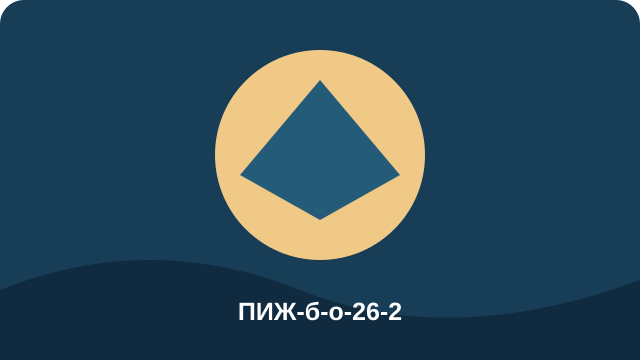

Страница посвящена учебной группе ПИЖ-б-о-26-2 Северо-Кавказского федерального университета. Здесь можно разместить общую информацию о направлениях обучения, совместных проектах и учебных достижениях.
Наша учебная группа

Страница посвящена учебной группе ПИЖ-б-о-26-2 Северо-Кавказского федерального университета. Здесь можно разместить общую информацию о направлениях обучения, совместных проектах и учебных достижениях.
В ходе изучения frontend-разработки мы осваиваем HTML5, создаём страницы и учимся структурировать информацию. Пример индивидуального учебного проекта представлен на странице «Обо мне».